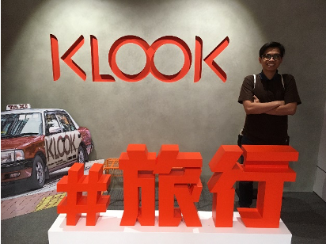

Discovering KLOOK: A Unicorn Company Transforming Travel
Ever wondered how some companies manage to redefine the way we travel? Let me take you behind the scenes of one such game-changer: KLOOK. Based in Taiwan, KLOOK isn't just another travel service platform. It’s a unicorn company that’s making exploring the world as easy as flipping out your phone.
During an eye-opening visit, we were warmly greeted by Mr. Sam Lin, the head of marketing at KLOOK Taiwan. He shared insights into the inception and rise of KLOOK, emphasizing its unique approach to startup culture, particularly in crafting marketing strategies and anticipating user needs - both now and in the future.
KLOOK's Vision: Simplify Your Travel
What sets KLOOK apart is its unwavering focus on simplicity. The idea? To make discovering activities and sights during your vacation as effortless as possible. And it's not just talk. KLOOK has morphed into a global unicorn company, validating its mission and approach.
The Formula for Growth
KLOOK’s story isn't just about its offerings but how it's grown, especially in its home ground, Taiwan. KLOOK has shown remarkable skill in nurturing relationships across the business spectrum, partnering with over 10,000 brands worldwide. These collaborations aren't just numbers; they translate into tangible benefits for users, like discounts, cashbacks, and a promise of a safer, well-budgeted trip.
Mr. Lin’s presentation wasn't just informative; it was a window into KLOOK’s ethos. The company’s traction in the industry, underscored by a whopping US$425 million in funding and significant investments from giants like SoftBank, Sequoia, and Goldman Sachs, speaks volumes of its potential and the faith the business world has in it.
Inside KLOOK: Where Work Meets Passion
But it's not all about numbers and strategies. Stepping into KLOOK’s office, I was struck by its vibe - futuristic yet inviting. An open space bursting with creativity, innovation, and, importantly, fun, painted in vibrant oranges that echo the spirit of KLOOK.
This environment extends beyond mere aesthetics. It’s where every team member thrives, embodying the company's "Learning by Doing" philosophy. The energy is palpable, with no room for the mundane - certainly a factor driving the company’s skyrocketing productivity and success.

In Conclusion
KLOOK's journey serves as a prime example of the dynamic outcomes when innovation is coupled with passion. As KLOOK continues to transform the travel experience, it not only establishes new benchmarks but also demonstrates the importance of understanding and satisfying the needs of its users. With its ongoing expansion across the globe, it's evident that KLOOK is doing more than simplifying travel; it's creating a unique space that serves as a source of inspiration for startups everywhere.
From my experience with KLOOK, I gleaned insights into various aspects like the company's management system and how to generate creative and innovative market ideas. The seminar offered an engaging and informative day, with highlights including the marketing strategy discussion and the office tour. However, I was slightly disappointed with Mr. Sam Lin's response regarding KLOOK's strategies for tackling the competitive Indonesian market (Sorry, it's personal! Hahaha). Despite this, the overall company visit was enriching, making KLOOK one of my top picks for seminar locations.
So, the next time you’re planning a vacation, you might just want to see what KLOOK has to offer – it could transform your trip into an adventure of a lifetime.